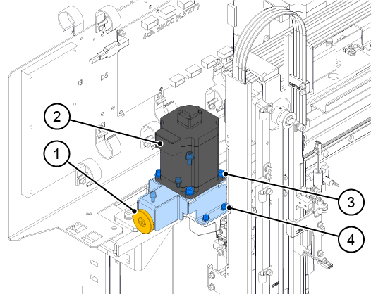
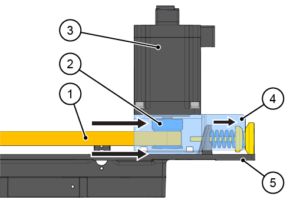
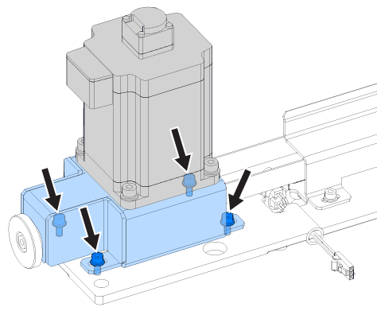
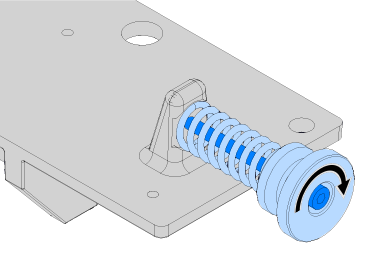
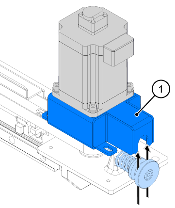
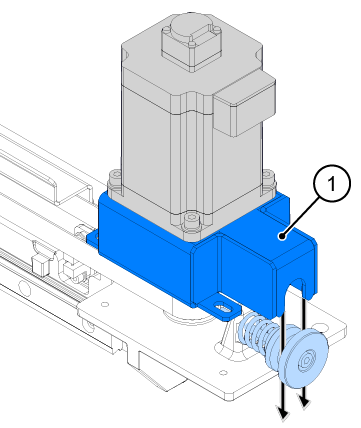
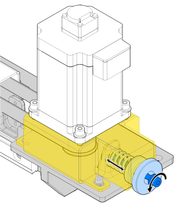

Replacing the X-axis Motor and Encoder, Belt, and Tensioner
This topic includes information about how to replace the x-axis motor and encoder, belt, and tensioner for the aliquot and precision sample pipettors.
Note: The aliquot and precision sample pipettor subsystems are similar. They differ primarily in the size and orientation of the gantry and in range of motion. Any important details for a specific subsystem will be identified in the procedure.
Tip: To more easily access certain components, you may need to remove the subsystem. See the following topics for more information:
Servicing the DxI 9000 instrument involves potential risks for pinch and puncture, electrical shock, and exposure to hazardous materials. You must mitigate these risks by taking appropriate countermeasures. See
Safety for more information.
The following tools are recommended for replacement of the components listed in this topic:
1.5mm hex driver (for M2 screws)
2.5mm hex driver (for M3 screws)
3mm hex driver (for M4 screws)
Removing the X-axis Motor and Encoder, Belt, and Tensioner
Perform this procedure to remove the x-axis motor and encoder (one piece), belt, and belt tensioner assembly.
Figure 340: X-Axis Motor and Encoder

1
Click-and-seal tensioner nut
2
Motor
3
QTY 4 (2.5 mm) ( M3) screws
4
QTY 4 (2.5 mm) ( M3) screws
Disconnect the motor and encoder cables from the assembly.
Loosen the four screws (3mm driver) securing the tensioner assembly to the gantry (see #3 in the illustration above) to allow the assembly to slide.
Remove the four screws (3mm driver) securing the motor and encoder assembly to the gantry (see #4 in the illustration above).
Remove the belt from the motor pulley, and remove the motor and encoder assembly.
Remove the belt from the x-carriage belt clip and pulley.
Remove the four screws (3mm driver) securing the tensioner assembly to the gantry and remove the tensioner assembly (see #3 in the illustration above).
Installing the X-axis Motor and Encoder, Belt, and Tensioner
Perform this procedure to install the x-axis motor and encoder (one piece), belt, and belt tensioner assembly.
Figure 341: Schematic Diagram of the new X-Belt Tensioner

Loosen the four screws that attach the motor mount onto the frame.
Note: Leave these screws somewhat loose so that the tensioner assembly can slide.
Figure 342: Motor Mount Screws

Tighten the M4x50 screw and compress the spring until the position of the spacer becomes loose and the motor mount can be removed.
Figure 343: M4x50 Screw and Spring

Remove the motor mount from the frame.
Figure 344: Motor Mount Removal

Remove the x-axis belt from the drive pulley.
Remove the x-axis belt from the fixed pulley.
Replace the x-axis belt and hook the belt to the fixed pulley.
Hook the belt to the pulley on the motor mount and fit the motor mount in the spacer.
Figure 345: Motor Mount Fit in Spacer

Loosen M4x50 screw to apply force so the belt can be tense.
Figure 346: M4x50 Screw Loosening

Tighten four M4x8 screws fixing the motor mount on the frame.
Tighten M4x5 screw.
Alignments
Perform alignments. See the following topics for more information.